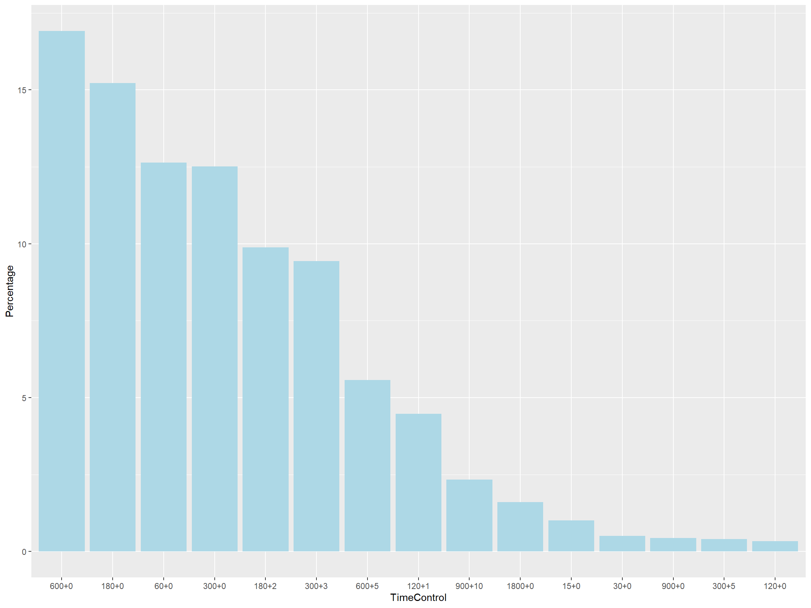

Chapter 3 Data transformation
3.1 Understanding the Raw Data
The raw data was in a zipped format of .pgn.bz2. The unzipped .pgn file was then converted through read.py.
The result of this transformation was named “data_index.csv” each constituting of 10,000,000 lines. Naturally, there were 9 files since the total count of games in the original data was 88,092,721.
Each row represented a game with columns.
This “data_index.csv” was only generated to answer the following questions.
- What items are missing in the original data?
- How much games were annotated?
The answer to the first question will be answered in the next chapter. From the data, we deduced that 7,142,630 / 88,092,721 = 8.1 % of the games were annotated compared to the 6 % claimed on the website.
3.2 Formatting the Raw Data
We decided to focus on the 7,142,630 games that were annotated.
The first formatting process was done using eval.py.
This process was different from the read.py that the resulting csv(pgn_index.csv) from eval.py contained the PGN descriptions of every game played.
This process was conducted to generate a working csv dataset independent from the original data set.
The second formatting process used edit.py.
The formatting process intended to change each row to moves instead of games.
The missing data of this csv data set will be examined in the next chapter.
464,436,334 annotated moves have been played but this data set was impossible to work with.
We decided to focus on the most popular time control format 600 + 0 or 10 minutes with no increment.
This time format is 16.91 % of all games.
The timecount.csv was generated through count.py.

By choosing this time format, we were able to conduct a deeper analysis on the relationship between time and bad moves.
3.3 Focusing on 600+0 data
We can run a weighted t-test and chi-square test on the Elo of players
Both results show that the mean of both data is the same and the data are dependent
The elocount.csv and elo600count.csv was generated through count.py.
## $test
## [1] "Two Sample Weighted T-Test (Welch)"
##
## $coefficients
## t.value df p.value
## -0.0866588 55.2709206 0.9312559
##
## $additional
## Difference Mean.x Mean.y Std. Err
## -8.984344 1647.843875 1656.828220 103.674924##
## Pearson's Chi-squared test
##
## data: df0$count and df1$count
## X-squared = 667, df = 598, p-value = 0.02605The following is the histogram and boxplots of the Elo distribution of all annotated games compared to 600+0 annotated games.

It is clear that 600+0 is a good representation of the players playing in lichess.org. The analysis will be based on the more manageable 600+0 dataset.